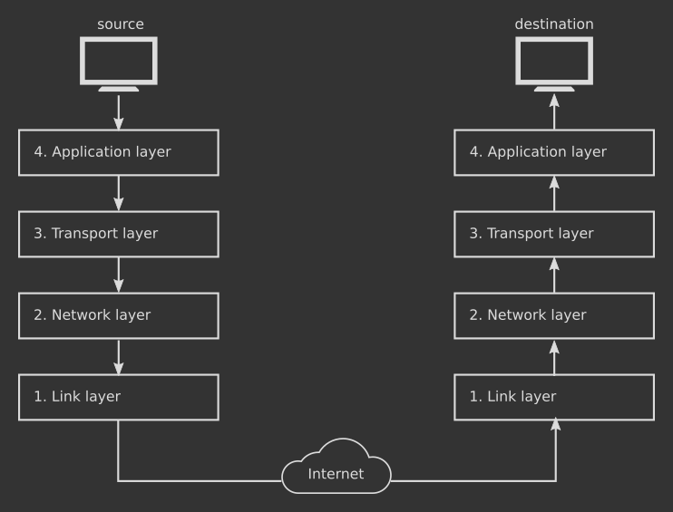

บทที่ 2: การทำงานของโปรโตคอล
โปรโตคอลในเครือข่ายคอมพิวเตอร์คือกฎที่ใช้กำหนดการสื่อสารระหว่างอุปกรณ์ต่าง ๆ เช่น TCP/IP ซึ่งเป็นหัวใจสำคัญของการทำงานบนอินเทอร์เน็ต
ตัวอย่างโปรโตคอลยอดนิยม
- HTTP/HTTPS: ใช้สำหรับการเข้าถึงเว็บไซต์
- FTP: ใช้สำหรับการโอนถ่ายไฟล์
- SMTP: ใช้ในการส่งอีเมล
- DNS: ระบบแปลงชื่อเว็บไซต์เป็น IP Address
โครงสร้างการสื่อสารในเครือข่าย

ภาพแสดงการทำงานของ TCP/IP ในแต่ละ Layer